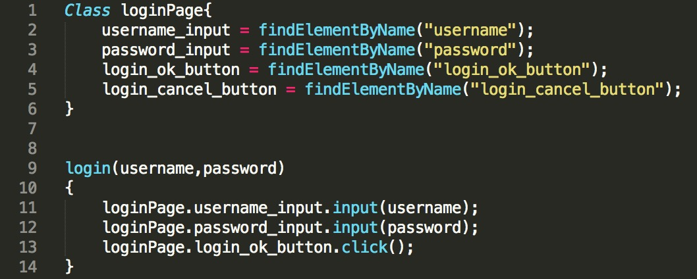

- 00 开篇词 从“小工”到“专家”，我的软件测试修炼之道.md
- 01 你真的懂测试吗？从“用户登录”测试谈起.md
- 02 如何设计一个“好的”测试用例？.md
- 03 什么是单元测试？如何做好单元测试？.md
- 04 为什么要做自动化测试？什么样的项目适合做自动化测试？.md
- 05 你知道软件开发各阶段都有哪些自动化测试技术吗？.md
- 06 你真的懂测试覆盖率吗？.md
- 07 如何高效填写软件缺陷报告？.md
- 08 以终为始，如何才能做好测试计划？.md
- 09 软件测试工程师的核心竞争力是什么？.md
- 10 软件测试工程师需要掌握的非测试知识有哪些？.md
- 11 互联网产品的测试策略应该如何设计？.md
- 12 从0到1：你的第一个GUI自动化测试.md
- 13 效率为王：脚本与数据的解耦 + Page Object模型.md
- 14 更接近业务的抽象：让自动化测试脚本更好地描述业务.md
- 15 过不了的坎：聊聊GUI自动化过程中的测试数据.md
- 16 脑洞大开：GUI测试还能这么玩（Page Code Gen + Data Gen + Headless）？.md
- 17 精益求精：聊聊提高GUI测试稳定性的关键技术.md
- 18 眼前一亮：带你玩转GUI自动化的测试报告.md
- 19 真实的战场：如何在大型项目中设计GUI自动化测试策略.md
- 20 与时俱进：浅谈移动应用测试方法与思路.md
- 21 移动测试神器：带你玩转Appium.md
- 22 从0到1：API测试怎么做？常用API测试工具简介.md
- 23 知其然知其所以然：聊聊API自动化测试框架的前世今生.md
- 24 紧跟时代步伐：微服务模式下API测试要怎么做？.md
- 25 不破不立：掌握代码级测试的基本理念与方法.md
- 26 深入浅出之静态测试方法.md
- 27 深入浅出之动态测试方法.md
- 28 带你一起解读不同视角的软件性能与性能指标.md
- 29 聊聊性能测试的基本方法与应用领域.md
- 30 工欲善其事必先利其器：后端性能测试工具原理与行业常用工具简介.md
- 31 工欲善其事必先利其器：前端性能测试工具原理与行业常用工具简介.md
- 32 无实例无真相：基于LoadRunner实现企业级服务器端性能测试的实践（上）.md
- 33 无实例无真相：基于LoadRunner实现企业级服务器端性能测试的实践（下）.md
- 34 站在巨人的肩膀：企业级实际性能测试案例与经验分享.md
- 35 如何准备测试数据？.md
- 36 浅谈测试数据的痛点.md
- 37 测试数据的“银弹”- 统一测试数据平台（上）.md
- 38 测试数据的“银弹”- 统一测试数据平台（下）.md
- 39 从小作坊到工厂：什么是Selenium Grid？如何搭建Selenium Grid？.md
- 40 从小工到专家：聊聊测试执行环境的架构设计（上）.md
- 41 从小工到专家：聊聊测试执行环境的架构设计（下）.md
- 42 实战：大型全球化电商的测试基础架构设计.md
- 43 发挥人的潜能：探索式测试.md
- 44 测试先行：测试驱动开发(TDD).md
- 45 打蛇打七寸：精准测试.md
- 46 安全第一：渗透测试.md
- 47 用机器设计测试用例：基于模型的测试.md
- 48 优秀的测试工程师为什么要懂大型网站的架构设计？.md
- 49 深入浅出网站高性能架构设计.md
- 50 深入浅出网站高可用架构设计.md
- 51 深入浅出网站伸缩性架构设计.md
- 52 深入浅出网站可扩展性架构设计.md
- 测试专栏特别放送 浅谈全链路压测.md
- 测试专栏特别放送 答疑解惑第一期.md
- 测试专栏特别放送 答疑解惑第七期.md
- 测试专栏特别放送 答疑解惑第三期.md
- 测试专栏特别放送 答疑解惑第二期.md
- 测试专栏特别放送 答疑解惑第五期.md
- 测试专栏特别放送 答疑解惑第六期.md
- 测试专栏特别放送 答疑解惑第四期.md
- 结束语 不是结束，而是开始.md
16 脑洞大开：GUI测试还能这么玩（Page Code Gen + Data Gen + Headless）？
在前面的几篇文章中，我介绍了GUI自动化测试的数据驱动测试、页面对象（Page Object）模型、业务流程封装，以及测试数据相关的内容。
今天这篇文章，我将从页面对象自动生成、GUI测试数据自动生成、无头浏览器三个方面展开，这也是GUI测试中三个比较有意思的知识点。
页面对象自动生成
在前面的文章中，我已经介绍过页面对象（Page Object）模型的概念。页面对象模型，是以Web页面为单位来封装页面上的控件以及控件的部分操作，而测试用例基于页面对象完成具体操作。最典型的模式就是：XXXPage.YYYComponent.ZZZOperation。
基于页面对象模型的伪代码示例，如图1所示。

图1 基于页面对象模型的伪代码示例
如果你在实际项目中已经用过页面对象模型，你会发现开发和维护页面对象的类（Page Class），是一件很耗费时间和体力的事儿。
- 你需要打开页面，识别出可以唯一确定某元素的属性或者属性集合，然后把它们写到Page Class里，比如图1的第2行代码username_input=findElementByName(“username”)，就是通过控件的名字（username）来定位元素的。
- 更糟糕的是，GUI的页面会经常变动，如果开发人员开发前端代码时没有严格遵循可测试性的要求，Page Class的维护成本就会更高。
那么，什么方法能够解决这个问题呢？答案就是，页面对象自动生成技术，它非常适用于需要维护大量页面对象的中大型GUI自动化测试项目。
页面对象自动生成技术，属于典型的“自动化你的自动化”的应用场景。它的基本思路是，你不用再手工维护Page Class了，只需要提供Web的URL，它就会自动帮你生成这个页面上所有控件的定位信息，并自动生成Page Class。
但是，需要注意的是，那些依赖于数据的动态页面对象也会被包含在自动生成的Page Class里，而这种动态页面对象通常不应该包含在Page Class里，所以，往往需要以手工的方式删除。
目前，很多商用自动化工具，比如UFT，已经支持页面对象自动生成功能了，同时还能够对Page Class进行版本管理。
但是，开源的自动化方案，页面对象自动生成功能一般需要自己开发，并且需要与你所用的自动化测试框架深度绑定。目前，中小企业很少有自己去实现这一功能的。
不过，有个好消息是，目前国内应用还不算多、免费的Katalon Studio，已经提供了类似的页面对象库管理功能，如果感兴趣的话，你可以去试用一下。
GUI测试数据自动生成
GUI测试数据自动生成，指的由机器自动生成测试用例的输入数据。
乍一听上去是不是感觉有点玄乎？机器不可能理解你的业务逻辑，怎么可能自动生成测试数据呢？
你的这个想法完全合理，并且也是完全正确的。所以，我在这里说的“测试数据自动生成”，仅仅局限于以下两种情况：
根据GUI输入数据类型，以及对应的自定义规则库自动生成测试输入数据。 比如，GUI界面上有一个“书名”输入框，它的数据类型是string。- 那么，基于数据类型就可以自动生成诸如 Null、SQL注入、超长字符串、非英语字符等测试数据。- 同时，根据自定义规则库，还可以根据具体规则生成各种测试数据。这个自定义规则库里面的规则，往往反映了具体的业务逻辑。比如，对于“书名”，就会有书名不能大于多少个字符、一些典型的书名（比如，英文书名、中文书名等）等等业务方面的要求，那么就可以根据这些业务要求来生成测试数据。- 根据自定义规则生成测试数据的核心思想，与安全扫描软件AppScan基于攻击规则库自动生成和执行安全测试的方式，有异曲同工之处。
对于需要组合多个测试输入数据的场景，测试数据自动生成可以自动完成多个测试数据的笛卡尔积组合，然后再以人工的方式剔除掉非法的数据组合。- 但是，这种方式并不一定是最高效的。对于输入参数比较多，且数据之间合法组合比较少或者难以明确的情况，先自动化生成笛卡尔积组合，再删除非法组合，效率往往还不如人为组合来得高。所以，在这个场景下是否要用测试数据自动生成方法，还需要具体问题具体分析。- 更常见的用法是，先手动选择部分输入数据进行笛卡尔积，并删除不合法的部分；然后，在此基础上，再人为添加更多业务上有意义的输入数据组合。- 比如，输入数据有A、B、C、D、E、F六个参数，你可以先选取最典型的几个参数生成笛卡尔积，假设这里选取A、B和C；然后，在生成的笛卡尔积中删除业务上不合法的组合；最后，再结合D、E和F的一些典型取值，构成更多的测试输入数据组合。
无头浏览器
无头浏览器，即Headless Browser，是一种没有界面的浏览器。
什么？浏览器没有界面，还叫什么浏览器啊？别急，我将为你一一道来。
无头浏览器，其实是一个特殊的浏览器，你可以把它简单地想象成是运行在内存中的浏览器。它拥有完整的浏览器内核，包括JavaScript解析引擎、渲染引擎等。
与普通浏览器最大的不同是，无头浏览器执行过程中看不到运行的界面，但是你依然可以用GUI测试框架的截图功能截取它执行中的页面。
无头浏览器的主要应用场景，包括GUI自动化测试、页面监控以及网络爬虫这三种。在GUI测试过程中，使用无头浏览器的好处主要体现在四个方面：
测试执行速度更快。 相对于普通浏览器来说，无头浏览器无需加载CSS以及渲染页面，在测试用例的执行速度上有很大的优势。
减少对测试执行的干扰。 可以减少操作系统以及其他软件（比如杀毒软件等）不可预期的弹出框，对浏览器测试的干扰。
简化测试执行环境的搭建。 对于大量测试用例的执行而言，可以减少对大规模Selenium Grid集群的依赖，GUI测试可以直接运行在无界面的服务器上。
在单机环境实现测试的并发执行。 可以在单机上很方便地运行多个无头浏览器，实现测试用例的并发执行。
但是，无头浏览器并不完美，它最大的缺点是，不能完全模拟真实的用户行为，而且由于没有实际完成页面的渲染，所以不太适用于需要对于页面布局进行验证的场景。同时，业界也一直缺乏理想的无头浏览器方案。
在Google发布Headless Chrome之前，PhantomJS是业界主流的无头浏览器解决方案。但是，这个项目的维护一直以来做得都不够好，已知未解决的缺陷数量多达1800多个，虽然支持主流的Webkit浏览器内核，但是依赖的Chrome版本太低。所以，无头浏览器一直难以在GUI自动化测试中大规模应用。
但好消息是，2017年Google发布了Headless Chrome，以及与之配套的Puppeteer框架，Puppeteer不仅支持最新版本的Chrome，而且得到Google官方的支持，这使得无头浏览器可以在实际项目中得到更好的应用。
也正是这个原因，PhantomJS的创建者Ariya Hidayat停止了它的后续维护，Headless Chrome成了无头浏览器的首选方案。
那什么是Puppeteer呢？Puppeteer是一个Node库，提供了高级别的API封装，这些API会通过Chrome DevTools Protocol与Headless Chrome的交互达到自动化操作的目的。
Puppeteer也是由Google开发的，所以它可以很好地支持Headless Chrome以及后续Chrome的版本更新。
如果你也迫不及待地想要尝试把Headless Chrome应用到自己的GUI测试中，那还等什么，赶紧下载并开始吧。
总结
我分别介绍了无头浏览器、页面对象自动生成，以及GUI测试数据自动生成，这三个GUI测试中比较有意思的知识点，包括它们的概念、应用场景等内容。
对于页面对象自动生成，商用测试软件已经实现了这个功能。但是，如果你选择开源测试框架，就需要自己实现这个功能了。
GUI测试数据自动生成，主要是基于测试输入数据的类型以及对应的自定义规则库实现的，并且对于多个测试输入数据，可以基于笛卡尔积来自动组合出完整的测试用例集合。
对于无头浏览器，你可以把它简单地想象成运行在内存中的浏览器，它拥有完整的浏览器内核。与普通浏览器最大的不同是，它在执行过程中看不到运行的界面。目前，Headless Chrome结合Puppeteer是最先进的无头浏览器方案，如果感兴趣，你可以下载试用。
思考题
在你的工作中，还有哪些好的方法和实践可以提高GUI自动化测试的效率吗？
欢迎你给我留言。
© 2019 - 2023 Liangliang Lee. Powered by gin and hexo-theme-book.